今天我想谈谈我们通常不谈论的话题。我们是自下而上的投资者，主要关注公司、估值、生意和行业。但在过去的几年里，特别是去年，很多人对中国宏观环境忧心忡忡，悲观情绪蔓延。我猜这也是在座有些人千里迢迢来到这儿的原因。所以我们今天就破例谈谈宏观环境。说到底，当我们投资一个国家的一家企业时，从某种意义而言，我们也是在投资这个国家。我们需要对这个国家有大致的了解。
另外需要说明的是，作为投资人，我们关注的是对未来大概率正确的预测。我们的分析尽量保持客观理性，摒弃任何意识形态及情感带来的偏见。我们要描述的是“真实”，而不是“理想”或“希望”。
下面是我今天演讲的提纲，分为五个部分：
一、中西方的历史文化差异；
二、中国的现代化历程及近40年的经济奇迹；
三、当前投资人尤其是海外投资人对中国的悲观情绪；
四、经济发展的三个不同阶段：今天中国与西方的位置；
五、中国经济的增长潜力。
首先我们会讨论中国和西方有何差异，各自有何独特之处，是什么原因导致了这些差异和独特之处。大多数西方人都是以西方眼光看中国，而大多数中国人都是以中国眼光看其他国家。这种差异性导致了许多迷茫和误解。如果你不了解中西方的历史差异和这些差异性的根源所在，你就无法真正深入理解并对它们的发展进行预测。第二部分，我们会简述中国的现代化历程，并解释近四十年中国经历的经济奇迹，即超长期的经济超高速增长。第三部分，我们会讨论今天投资人普遍关注的中国政治经济环境，当下这个时代到底有什么特征，意味着什么。第四部分，我们会讨论经济发展的三个不同阶段。最后，在这些讨论的基础之上，我们就可以估测未来5年、10年甚至20年中国经济的增长前景。
我知道这是一个很宏大的议程，涵盖了相当多领域。很抱歉因为时间关系我只能快速地过一遍，这种求快的方式与我们日常工作的方式可谓背道而驰。我的目的是给出一个大致的框架，帮助大家开始理解这些问题。今天讨论的大部分内容都是我过去40年思考的产物。我从少年时代就开始沉迷于思考其中的一些问题。如果想要更深入的讨论，我可以给大家提供更多参考资料。
首先我们来讨论到底是什么原因导致了中国和西方的差异和独特之处。自古代社会直到近代，中国和西方，或者简单地说东西方，都被喜马拉雅山脉和广袤的蒙古草原分隔成两块，两者几乎没有什么交流。因此东西方文明各自独立地进行发展。一些偶然的历史事件让东西方分别在不同时期走上了不同的道路，因此他们也在对待事物的方式和建立的体系中体现出不同的倾向性。当然，中国人和西方人都是人类，都有人性共通之处。但他们产生了不同的发展走向，这是由于人性在不同的外界因素影响下展现出不同的方面所导致的。我会讲述一些导致了这些差异的基本事件，其中地理环境是最重要的原因。
先来看中国的地理环境。中国的西面是世界屋脊喜马拉雅山脉，一道人类几乎无法逾越的屏障，北面是辽阔、冰冷的蒙古大草原，东面和南面临海。非常有意思的是两条同样发源于喜马拉雅山的大河，长江和黄河，朝着同一个方向奔流入海。在人类发现美洲大陆以前，长江和黄河之间形成的这块冲积平原是地球上最肥沃、最广阔、最适合农耕的土地之一，可谓天赐之地。因此，农业很早就在这里萌芽。这两个大河道再加上一些支流，为平原上各个地区之间的交通提供了经济、便利的方式。所以只要某一个地方能聚集起足够大的力量，征服这一整片土地便不是难事。
农业文明的基础是光合作用，它把太阳能转化成农作物和可畜养动物，而动植物都依赖土地。这就意味着土地的大小决定了农业产出和所能负担的人口数量。在整个农业文明的历史中，土地的稀缺性是贯穿始终的主题。某个社会一旦拥有更多的土地，就会产生更多的人口，当人口多到一定程度，超过土地大小所能承载的极限，就会陷入马尔萨斯陷阱。战争、瘟疫、饥荒纷至沓来，人口急剧减少，又开始新一轮的循环。农业文明的经济是短缺经济，也即农业经济不足以维持人口的正常增长规模，在到达土地产出极限时，人类的总人口只能减少。减少的人口通常以民族、种族和国家划线。占据了最大片土地的族群通常能生存下来，而代价是其他族群的衰亡。农业文明中的战争通常是为了争夺更多土地。
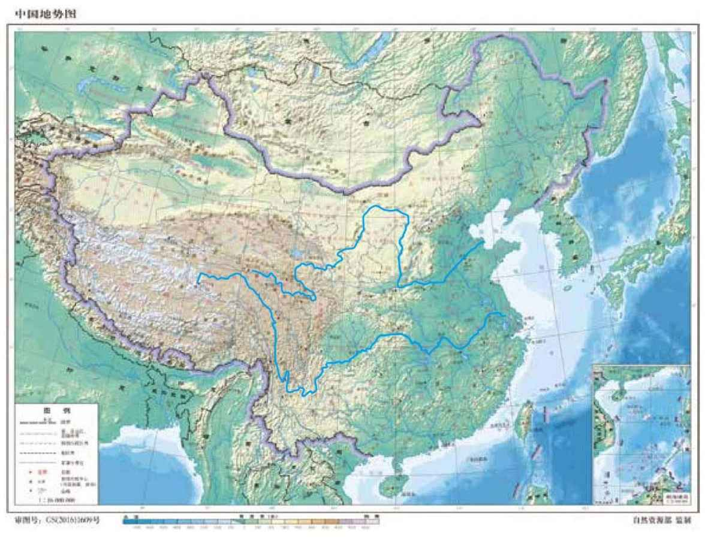
中华文明5000年历史上，这样的争战数不胜数。最终的胜者是那些发明出一种大规模动员人民的方式的社会，也就是政治组织形式比较完善的社会。人类非常有趣，既有高度的个体性，又有高度的社会性。在这点上，人类在所有物种中可谓独一无二。而中国人最先探索出一种大规模动员社会的方法。
大约2400年前，地处中国西边的一个小国——秦国实行了商鞅变法。商鞅变法的重要意义在于它掀起了社会组织方式的一场翻天覆地的创新革命。在此之前，因为人从动物进化而来，所以自然都是以血缘关系为核心来向外延伸人和人的关系。秦国首次打破了这种血缘关系，规定财产可以传代，但政治权力不可以传代。政治权力的分配仅以一代之内的功绩和能力为依据。在此之前的中国，以及一直到现代以前的西方，以血缘关系为基础的封建制度一直是主体。如果上一代封爵，子孙数代都可以封爵。政治权力是以血缘关系来分配和传承的，社会高度固化，很少有上下自由浮动的机会。
秦国的商鞅变法开创了任人唯贤的制度，根据功绩、学识和能力进行人才选择和政治权力分配。而且这种选择和分配只限于一代人之内。秦国这个小国，因其为社会中的每一个人提供了不论出身、可以靠自身努力获得政治权力的上升通道，因而动员起所有人的力量，最终征服了整个中华领土，建立起一个庞大的帝国。此后的200多年间，中国各朝各代都是以相似的方式组织社会，也因此在农业文明时代中国一直非常强大，其政治体系高度精密、完善。中国人在历史上首先发明了以贤能制为基础的官僚体制，在某种程度上这种传统今天仍在继续，吸引着最卓越、最聪明能干的人进入政府工作。西方在历史上则从未有过这样的传统。中国是最早发明政治贤能制（Political Meritocracy）的国家，从而得以释放出集体的巨大潜力。这一直也是中华文明的标识。
我们再来看西方，主要是欧洲，因为欧洲在现代史中的角色更为重要。欧洲的地理环境有一个重要的特征，就是布满了许多流向纷乱的小河流。欧洲整个区域并不大，却被山脉和复杂的河道分割成许多小块，易守难攻。再加上大部分历史时期内，欧洲仍被浓密的原始森林所覆盖。因此，在罗马帝国时期，欧洲几乎还处在荒蛮时代。直至西罗马帝国灭亡，原始森林被慢慢砍伐，农业才开始蓬勃发展。但因地理条件所限，欧洲的土地无法支撑一个统一的大帝国，以至于罗马帝国之后所有重新统一欧洲的努力皆以失败告终。要管理好所有这些小国，只需依靠以国王和贵族为核心的血缘关系和国与国之间的血缘、地缘关系便足够了。所有政治权力都是可遗传的。因此，在现代以前，西方的政治权力从未像中国那样向着平等主义、任人唯贤的方向发展。
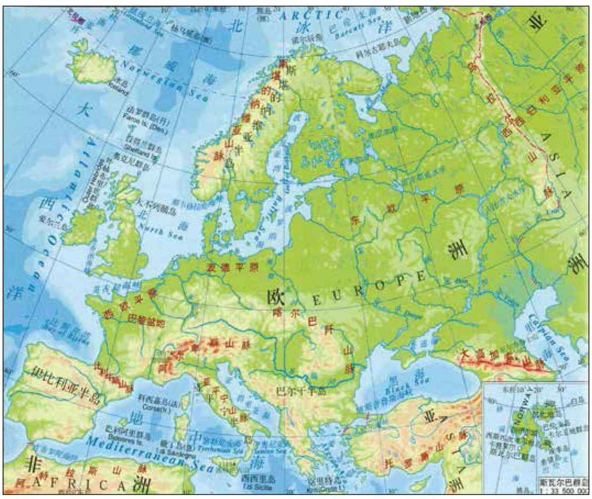
然而，西方在地理上有一项决定性的优势，这一优势在近代500年的历史中被证明是非常关键的。为了理解这一优势，我们先看一下欧洲和中国与美洲之间的距离（图17）。图17中的左右两张图片不是完全比例一致的，但我们大致可以看出欧洲和中国与美洲之间的距离差异之大。欧洲和美洲之间的距离约为3000英里，中国和美洲之间的距离约为6000英里。再考虑到洋流的因素，中国和美洲之间的距离实际上远大于6000英里。因此，当欧洲的商人开始航海时，他们到达和发现美洲大陆的概率要远高于中国的商人。在现代科技文明出现以前，想从中国航海到达美洲简直是天方夜谭。郑和下的只能是“西洋”，而不是“东洋”。而从欧洲航海到达美洲却是完全有可能的。这就是为什么欧洲人“偶然”发现了美洲大陆，这一偶然之中蕴含了地理位置优势之必然。
这次地理大发现的意义非比寻常。首先，欧洲人借此暂时逃脱了马尔萨斯陷阱，因为北美洲的土地比长江和黄河之间的冲积平原更广阔、更肥沃。由于北美农业的自然禀赋（主要是指农业所需要的原生动植物物种）过于贫乏，而且在地理上与欧亚大陆自冰川纪后就一直处于隔绝状态，因此农业还未得到发展，所以这一区域人口稀少、文明极其落后。欧洲人踏上美洲大陆后，轻而易举就征服了本地的原住民，其中绝大部分原住民死于欧洲人带去的病菌。忽然之间，欧洲继承了一块巨大的、肥沃的土地，几乎可以支持无限多的人口，由此得以在跨大西洋领域内形成了持续数百年的自由贸易与经济繁荣。当然，如果人口一直增长下去，土地最终也将无法支持，还是会陷入马尔萨斯陷阱。但在此之前，另一重大事件发生了。新一轮的持续经济增长同时引爆了社会思想和自然科学两个领域的剧变，最终导致了启蒙运动和伟大的科学革命。此后，自由市场经济与现代科技的结合引发了文明范式的转变，真正将人类文明带入了全新的阶段。这个时代的定义是持续的、复利式的、无限的经济增长。这种现象在人类历史上前所未有。
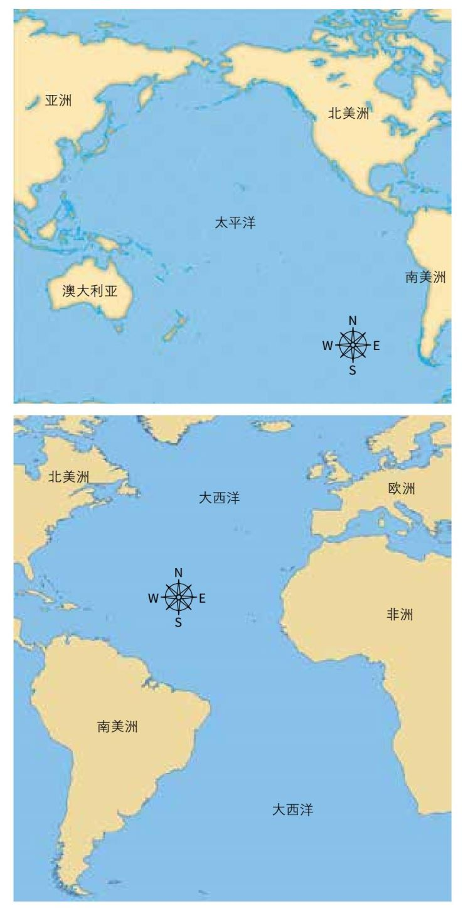
如前所述，农业文明是由光合作用原理决定的，光合作用对能量转换的极限受制于土地的大小。土地的大小有自然的上限，因此农业文明的经济是短缺经济。而以现代科学技术为基础的文明能够释放出持续的、复利式的经济增长的动力，将农业时代的短缺经济转变为富足经济。这种区别是划时代的。
这种新制度是经济贤能制（Economic Meritocracy）的结果。在欧洲，人们忽然发现，无论你是谁，出身如何，你在经济层面上有了自由上升的通道，可以通过努力飞黄腾达。这种体系有助于释放个人和小集体（公司）的潜力，它吸引着人性的另一个方面，即个体性力量的释放。这是过去几百年间的现代史上才发生的现象，欧洲（西方）分裂的小诸侯国及美洲大陆上特别是北美的小殖民国，正是形成这种新文明的政治、地理土壤，而在西方个体和小集体的强大是现代文明的产物。
这就是为什么西方看中国、中国看西方时，都常常不得其法。他们总是从自己的偏见和自身的成功经验出发。例如，西方是因为个体和小集体（公司）的力量而成功的，他们对政府的干预就不免总有深入骨髓的怀疑。所以我今天演讲的第一部分就是要给大家做好铺垫，讲述一下中西方之间这些有着长期历史渊源的、深刻的、根本性的差异。
1840年，中国和现代的西方以鸦片战争的形式相遇了，中国被迫开放通商口岸，同时也不得不面对残酷的现实——当他们还沉浸在农业文明时期的辉煌中时，已经完全错过了工业革命和科技文明。西方已经在这个过程中先行了几百年。此后的100多年里，中国在半殖民地状态下跌跌撞撞、举步维艰。1949年，中国在共产党的领导下重新建立起统一的国家，在开始阶段走上了计划经济的道路，至少部分原因是计划经济的特点与中国人组织集体、释放集体潜力的本能恰好吻合。对中国政府来说，这也是很自然的选择。当一个国家选择自己的命运和发展道路时，会受到根深蒂固的历史偏见的影响。后来计划经济的结果如何，大家也都知道了。
1978年，邓小平上台，那时他并不知道带领中国走向繁荣的正确路线是什么。但邓小平有一个非常实际的观察。据其翻译李慎之在回忆录中所述，邓小平曾告诉李慎之，据他观察，二战后凡是与美国好的国家都富了，凡是与苏联好的国家都变得非常贫穷。这是邓小平在1978年第一次访美时告诉李慎之的。此次访美后，在吉米·卡特（Jimmy Carter）总统当政时中美建立了外交关系。从此，邓小平冲破中国传统历史偏见的藩篱，转而学习美国的道路，开始倡导市场经济，开放国门，如饥似渴地向美国及西方学习现代科学技术及市场经济道路。
自此，我们见证了中国近40年的经济超高速增长。图15显示了中国1978年到2018年通货膨胀调整后的实际经济增长率。这40年的复合增长率平均约为9.4%。按实际价值计算，中国40年来国内生产总值翻了37倍。这个世界第一人口大国实现了超长时期内经济持续超高速的增长，这绝对是一个奇迹，是史无前例的。
现在我们来解释一下这40年超级增长的原因。首先是一些常规的解释。邓小平的改革开放政策让中国人真切地观察到美国的成功，也即西方成功的一个典范。在中国实行开放政策的时候，美国相对来说还非常自信、胸怀宽广，愿意帮助中国。美国愿意帮助中国，首先是因为两者同为反对苏联的盟友，其次美国还带有一种传教士般的热情，想引领中国走入现代化，这也是美国一贯以来的历史。另外，当时的世界大环境比较和平，美国的消费也为中国的经济增长助力，世界处于大规模全球化的进程中，中国加入了WTO等等。中国的经济增长离不开这些顺风车。另外因为中国曾经太落后，要奋起直追，所以通过借鉴他国成功经验，谨慎规划未来的道路，总体来说规划得更好。中国人还有努力工作、重视教育、富有创业精神等文化传统。之前几十年的经历促使他们更加珍惜改革开放政策带来的机会去努力工作。在人口方面，通过全球化、加入WTO，中国数亿年轻劳动力得以迅速融入全球经济。这些年轻人在很短的时间内就能创造出巨大的产出。而恰好这些产出还能被全世界吸收。所有这些因素都在一定程度上解释了中国几十年的高速增长，但它们还不是全部。
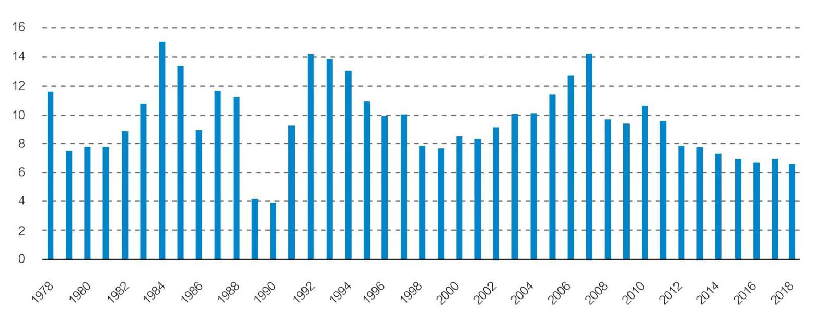
下面我来谈谈非常规的解释。首先，现代文明的本质并非政治制度，而是自由市场经济与现代科学技术的结合。中国人已经在各种不同的方向上跌跌撞撞地走了150多年，直到1978年他们才真正达到了这种结合。那时，中国已经存在一个潜在的统一市场，还有着统一、稳定的政治环境。一旦真正开始接受现代文明的精髓，中国就像其他现代国家一样开始蓬勃发展。历史上其他国家的经济起飞也是遵循相同的道路。国际上最流行的一种观念认为政治民主是实现现代化的必要条件，但中国的成功恰恰是一个反例。政治民主并不是现代化的先决条件。
另一个原因是中国的独特政治经济体系，也被一些学者称为“三合一市场机制”。我们在第一部分说过，中国人最早探索出通过政治贤能制来释放集体力量和潜力的方法。在过去的40年里，中国又通过组织市场经济的独特方式将这一历史传统发挥得淋漓尽致。所谓“三合一市场机制”，就是中央政府、地方政府和企业之间的密切合作。中央政府制定战略，提供资源支持，调节经济周期——这一点和美国联邦政府相似。中国的独特之处在于地方政府之间的竞争。中国地方政府的行为更像是企业行为，这些“公司式地方政府”为真正的商业公司提供总部式服务。如果公司去某地投资设厂，当地政府可以为它们提供土地，修路造桥，组织劳动力，改变税收制度，甚至可以购买公司生产出的第一批产品。地方政府竭尽所能帮助公司在当地落脚并取得成功。公司只需要牢牢抓住市场机遇。作为交换，公司大量雇佣本土劳工，贡献GDP，并向地方政府支付税收，但从某种意义上说，这更像是支付租金，因为相当于租用了一个现成的公司总部。与此同时，不同的地方政府相互竞争，为商业公司提供更好的服务，和中央政府一起促成了经济的长期增长。从图18中可以看出，多年来中国经济增长率的起伏非常小。这种独特的模式在超长的时间内产生了超高的增长率，且周期性变化非常小。当然周期性变化很小也离不开温和的国际环境和开放的自由交易系统。
然而最近几年，情况发生了变化。首先，当地方政府像企业一样提供商业服务时，它们会要求租金，有些官员甚至会以权谋私，要求企业直接把租金支付给个人。因此，这种模式在创造了超高速经济增长的同时，也催生了严重的贪腐、寻租、环境污染恶化、不同地区之间的恶性竞争、不可持续的贫富分化，和高度依赖债务的经济，因为债务是中央政府用来缓和经济周期起伏的主要方式之一。这些是三合一市场机制的缺点。
在此期间，国际环境也发生了变化。当中国成为世界第二大经济体、世界上最大的贸易国和最大的工业国时，其他国家和地区的经济没有达到9%的增速来适应这么多的产出。此外，全球化的结果之一是，那些原本发达的工业大国正在失去其工业上的优势基础。而全球化为发达国家带来的好处又集中地过度分配给了科技与金融领域中的精英们，贫富分化日益严重，中产阶级的生活水平停滞不前。于是反全球化运动和各种民粹主义政治运动开始聚集力量。
在中国经济持续增长了40年后，它的独特发展模式也遇到了困难。
十八大以来，中国政府发起了一场可能是最全面、最持久的反腐运动，这场运动持续了整整6年多，至今还在进行。政府发布了一系列改革计划，同时推行两个并行的政策目标。一个目标是通过全面从严治党来加强对整个国家社会的掌控；另一个目标是同时为中国继续创造中高速（相对于超高速）的、可持续的经济增长。
但大多数人都把问题的重点放在了第一个目标，因为它带来的变化很大，影响到了所有官僚机构，影响到了所有知识分子、商人，也影响到了每个公民。在过去一段时间内，很多人都感到难以适应。它导致了某些政府官员的不作为和乱作为，甚至使部分企业和消费者对未来失去了信心，金融市场大幅下跌。这就是2018年中国接二连三产生“黑天鹅事件”的背景。
中美贸易战在这个时期爆发无异于雪上加霜。国际上，新一轮“中国即将崩塌”的理论又开始流行。这句话最早出自章家敦（Gordon Chang）2001年所写的《中国即将崩塌》（The Coming Collapse of China）。这句预言此后多次兴盛，每过几年都会被外国知名报刊杂志、企业家和政客一再重提。在中国国内，持这一观点的也不乏其人。最近我们又迎来了新一波的悲观情绪，出现对中国即将崩塌的新一轮预测。持这一观点的人怀疑全面从严治党政策的最终目标，甚至怀疑政府推动市场经济改革发展的决心，这是否预示着中国超高速增长的终结？
但是反过来想，加强党的领导也带来了更加稳定的政府、稳定的国家，和稳定、持续、共同、单一的大市场。反腐运动还有效地遏制了贪腐和寻租行为，将一些根深蒂固的利益集团连根拔除，从而使一些原本很难推行的经济改革成为可能。我们还看到中国对技术、教育、环境都在持续地加大投资，中国经济也在从出口和投资导向向最终消费导向转型。这几年，我们看到了社会的很多变化，在某些方面，舆论空间收窄，但在另一些方面，这些政策也卓有成效，比如扶贫、环保等，效果可以说立竿见影。这就是这几年中国国内环境发生的变化。
国际上，我们再谈谈贸易战，很多人问到这场贸易战是否预示着中国增长周期的终止。我们来看一下数据。图16显示的是中国商品及服务净出口占国内生产总值的百分比，它的计算公式是用商品及服务的出口值减去商品及服务的进口值，再除以国内生产总值。历史上的一些时期，中国的净出口曾经非常高，接近国内生产总值的9%。也曾经低到-4%。但在过去的5年里，中国的净出口平均值在2%左右。
再看下图20，你就会明白近些年来国际贸易对中国经济增长影响力的变化了。图20显示的是2003年以来最终消费、投资和商品及服务净出口对中国国内生产总值增长的贡献率。十几年前，净出口对中国GDP的贡献很大，2008年和2009年开始下降（当时中国是支撑全球其他经济体的主要进口国）。过去5年，最终消费的贡献在持续增长，资本形成总额（即投资）相对降低，而净出口显著降低，换句话说，中国经济对国外市场的依赖性显著降低。中国供给侧的经济改革产生了实际的成效。笼罩在林林种种的担忧、恐惧、抱怨和预言中，中国经济实际上正在悄然发生变化，2018年最终消费对GDP增长的贡献率达到76.2%，资本形成总额贡献率32.4%，货物和服务净出口贡献率为-8.6%[1]。中美贸易冲突固然会对中国经济造成损害和诸多负面影响，但是已不足以阻止中国经济的持续增长。
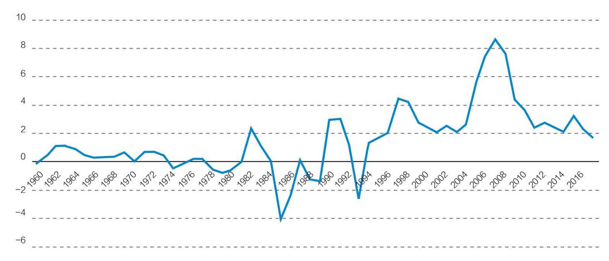
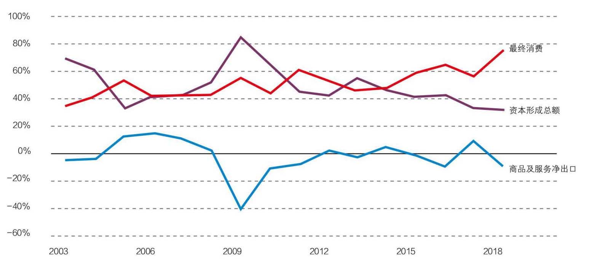
在发展经济学中，刘易斯拐点是一个重要的概念。在工业化早期，农村的剩余劳动人口不断被吸引到城市工业中，但是随着工业发展到一定的规模之后，农村剩余劳动人口从过剩变到短缺——这个拐点就被称为刘易斯拐点。这一观察最早由英国经济学家威廉·阿瑟·刘易斯（W. Arthur Lewis）在50年代提出。
在刘易斯拐点到来之前，也即早期城镇工业化过程中，资本拥有绝对的掌控力，劳工一般很难有定价权和讨价还价的能力，但是因为农村里有很多剩余人口，找工作的人很多，企业自然就会剥削工人。
过了刘易斯拐点之后，进入到经济发展的成熟阶段，这时候企业需要通过提高对生产设备的投资以提高产出，同时迎合满足雇员的需求，增加工资，改善工作环境和生产设备等等。在这个时期，因为劳动人口已经开始短缺，经济发展会导致工资水平不断上升，工资上升又引起消费水平上升，储蓄水平和投资水平也会上升，这样公司的利润也会上升，形成了一个互相作用、向上的正向循环。这个阶段中，几乎社会中的每个人都能享受到经济发展的成果，同时会形成一个以中产阶级为主的消费社会，整个国家进入经济发展的黄金时期。所以这个阶段也被称为黄金时代。
今天的经济是一个全球化的经济。当黄金状态持续一段时间，工资增长到一定水平后，对企业来说，在海外其他新兴经济中生产会变得更有吸引力。此时企业开始慢慢将投资转移到发展中国家，这些发展中国家开始进入自己的工业化过程。如果这种情况在本国大规模发生，本国投资就会减少，本国的劳工，尤其是那些低技能劳工的工资水平会停止上升甚至下降。这一阶段，经济仍然在发展，但是经济发展的成果对社会中的各个阶层已经不再均衡。劳工需要靠自己生存。那些技术含量比较高的工作，比如科学技术、金融、国际市场类的工作回报会很高，资本的海外回报也会很高。但是社会的总体工资水平会停滞不前，国内投资机会大大减少。美籍经济学家辜朝明（Richard Koo）先生称这一阶段为后刘易斯拐点的被追赶阶段。
今天主要的西方国家大概都在70年代慢慢进入了上述的第三个阶段（被追赶阶段）。而作为曾经在追赶中的新兴国家，例如日本也在90年代以后开始进入了被追赶阶段。对中国来说，虽然不同观察者提出的具体时间不同，但大体上中国应该是在过去几年中已经越过了刘易斯拐点，开始进入到成熟的经济发展状态。如下面几张图所示，中国近些年的工资水平、消费水平、投资水平都开始呈现出加速增长的趋势。
在经济发展的不同阶段，政府的宏观政策会有不同的功用。在早期工业化过程中，政府的财政政策会发挥巨大的作用，投资基础设施、资源、出口相关服务等都有助于新兴国家迅速进入工业化状态。进入到后刘易斯拐点的成熟阶段以后，经济发展主要依靠国内消费，处在市场前沿的私人部门企业家更能把握市场瞬息万变的商机。此时依靠财政政策的进一步投资就开始和私营部门的投资互相冲突、互相竞争资源。这一时期，货币政策更能有效地调动私营部门的积极性，促进经济发展。到了被追赶阶段，因为国内投资环境恶化，投资机会减少，私营部门因海外投资收益更高，而不愿意投资国内。此时政府的财政政策又变得更为重要，它可以弥补国内的私营部门投资不足，居民储蓄过多而消费不足。反而货币政策在这一阶段会常常失灵。
但是因为政府的惯性比较强，所以常常当经济发展阶段发生变化时，政策的执行仍然停留在上一个发展阶段的成功经验中。比如说，在今天的西方，宏观政策还是主要依靠在黄金时代比较有效的货币政策，但从实际的结果来看，这些政策有效性很低，以至于到今天很多西方国家，尤其是欧洲和日本在货币超发、零利率甚至负利率的情况下，通货膨胀率还仍然很低，经济增长仍然极其缓慢。同样地，当中国经济已经开始进入到后刘易斯拐点的成熟阶段后，政府的财政政策还是很强势，政府对货币政策的使用仍然相对较弱。过去几年，私营企业在一定程度上受到各种财政政策和国企的挤压，在某些领域空间有缩窄的趋势。这些宏观政策和经济发展阶段错位的现象在各个国家各个阶段都有发生。
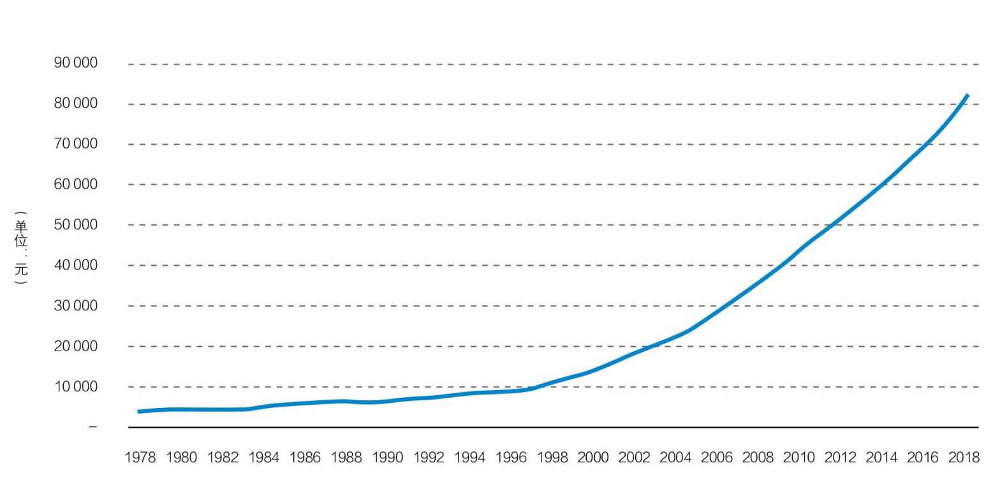
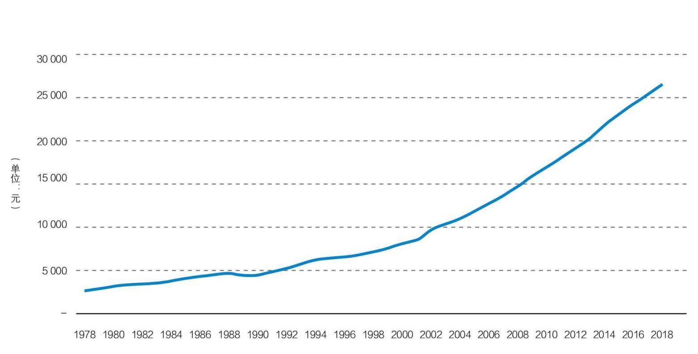
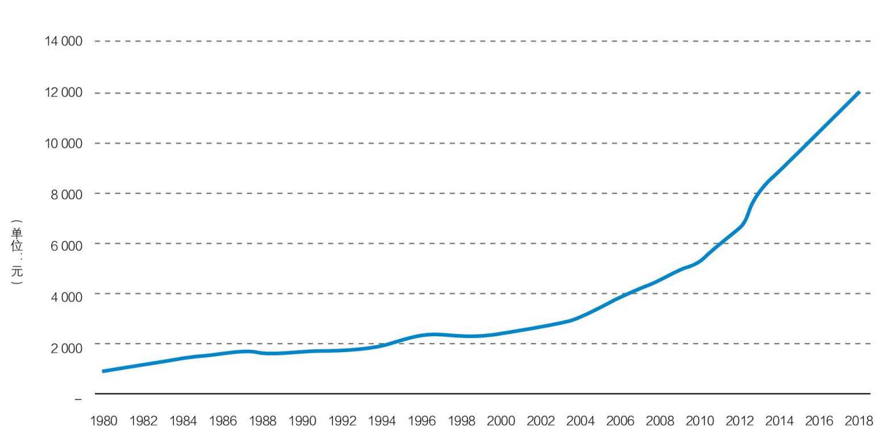
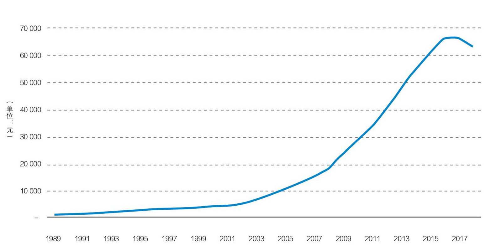
然而不容否认，中国仍然处于经济发展的黄金时代，对西方发达国家仍然有成本优势，而后面的其他新兴发展中国家（如印度等）还没有形成系统性的竞争优势。今后若干年，中国的工资水平、储蓄水平、投资水平和消费水平还会呈现相互追赶的、螺旋上升的状态，处在一个互相促进的正向循环中，投资机会仍然非常丰富、优异。如果政府能在这一阶段中运用更多的宏观货币政策，支持私营企业，对于这一阶段的经济发展将会大有益处。
有了以上基础，我们就可以尝试着回答这个问题：该如何估测未来5年、10年、15年、20年甚至更长期的中国经济增长潜力？我想从五个方面来回答这个问题。
1.首先，如前所述，现代文明的基础是现代科技和自由市场经济的结合，与政治组织方式关系不大。而技术密度却与经济增长直接相关。考虑到中国的高等教育现状，考虑到中国的人均GDP和人均研发费用时，你就会发现中国潜力很大。中国去年毕业了750万大学生，其中470万是STEM专业[2]。对比之下，美国大学STEM专业的毕业生人数，在大约50万左右，只有中国的十分之一，2年后，中国预计总共会有近2亿大学生，已经接近整个美国的工作人口。中国即将享受到巨大的工程师红利。类似的情况发生在1978年初，当时来自中国农村的数亿年轻人搬迁到大城市，不管工作难易，薪水高低，他们都愿意全力去打拼。中国这几十年的经济起飞正是得利于劳动力红利以及全球化带来的工作机会。
今天我们即将迎来工程师红利的时代，享受工程师红利带来的经济转型升级和富足社会。华为就是一个很好的例子，他们雇佣了约15万名工程师，这些工程师都至少拥有工程学学士学位，其中大多数还有硕士以上学位。华为支付给他们的工资报酬大概只相当于西雅图或旧金山硅谷同等职位的一小部分，但华为的工程师都以刻苦敬业闻名于行业。他们的聪明程度、所受的专业训练绝不亚于那些西雅图或旧金山硅谷的工程师。中国即将释放出的竞争潜力就在于此。
我们进一步讨论工程师红利的问题。图25中显示的是一些国家、地区人均GDP和研发支出占GDP的比例。2017年，中国人均GDP接近9000美元（2018年中国人均GDP已接近10000美元）。就人均GDP而言，中国与巴西、墨西哥和泰国相当。但中国的研发支出所占GDP的比例要远高于这些国家，达到2.13%。相比之下，巴西为1.27%，泰国为0.78%，而墨西哥只有0.49%。中国研发支出占GDP的比例甚至比西班牙、葡萄牙这些国家都高。西班牙的人均GDP是中国的3倍，葡萄牙的人均GDP是中国的2倍。也就是说，中国的研发支出占GDP的比例高出了那些人均GDP是其2倍、3倍的国家，而且远远高出那些和中国拥有同等水平人均GDP的国家。
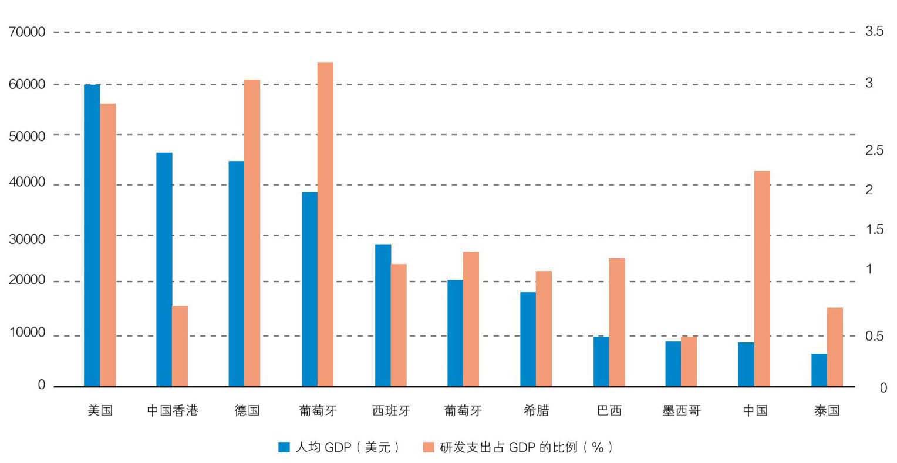
2.那么如何释放中国人均GDP的潜能呢？城市化率是另一个重要因素。所有那些人均GDP较高且研发支出较高的国家的城市化率都在70%左右，而今天中国的城市化率仅有55%。而且这个数字还有些夸大了，因为其中包括了1.8亿农民工，这些农民工虽然在城市生活，但没有城市户口。只有那些有户口的人才有权享受一系列社会福利，包括教育、退休和医疗福利。有了这些保障后，减少了后顾之忧，人们才会更愿意去消费。因此，这1.8亿农民工并不是城市生活的完全参与者。更不用提那些完全生活在城市之外的45%农村人口了。
然而，中国政府计划在未来20年内将以每年1%的速度开展城市化进程，这意味着在未来20年内，大约有3亿人成为新的消费者。这正是参与城市化进程的全部意义所在——成为消费者。一旦你真正加入城市生活，有了基本的社会保障，你就会像身边的所有公民一样开始消费，开始赚钱，开始进入到经济循环中去。结果就是可持续的经济增长。
3.另一个问题是：中国是否有足够资金来支持城市化、支持建设、支持制造业升级？恰巧中国还有另一个特征可以为此助力。如图26所示，这是中国从1952年到2017年的国民储蓄率。即使在改革开放前，中国的储蓄率也一直居高不下。非常有趣的是近年来消费水平大幅上涨的同时，储蓄率也在升高。去年，中国作为世界第二大经济体，其储蓄率仍高达45%。高储蓄率就是支持进一步消费和投资的资源。
高储蓄率还能解决让许多人担忧的一件事——高债务水平。中国的债务水平自2008年以来一直不断升高，当时中国为应对美国次贷危机引发的全球经济大衰退开始持续大量投资，主要通过发行货币，依靠债务融资。传统上，中国社会融资主要来自银行债务，比例有时可高达80-90%。股票市场及股权融资占整体融资比例很低。但无论是债务还是股票，它们的来源都是一样的，它们不是从美国或任何其他国家来的，而是直接来自于本国储户。几乎所有中国债务的债主都是中国人自己，并以本币发行。所以尽管债务占比较高，但是因此引发金融危机的可能性至少目前并不高。
下一步中国政府想做的就是通过资本市场改革从根本上改变中国的融资结构，大大增加股权的权重，减少债务所占比例。就在昨天，我们看到了中国将在沪市推出“科创板”的新闻。“科创板”会采用与美国相同的模式，即以信息披露为基础的注册制资本发行，而非以前的审批制。这意味着任何想要上市的公司，都可以在较短的时间内，以较为自由的方式进入资本市场，以自由竞争方式获取资本。当然政府会在事后对其进行监控。这一模式和美国是相同的。从注册制改革开始，中国会慢慢调整社会融资结构，将银行债务从80-90%的高比例逐步调低。一个复杂成熟的经济体是不应该有这么高的银行债务比例的。因此，资本市场改革将成为解锁高债务比问题和提高融资效率的关键。
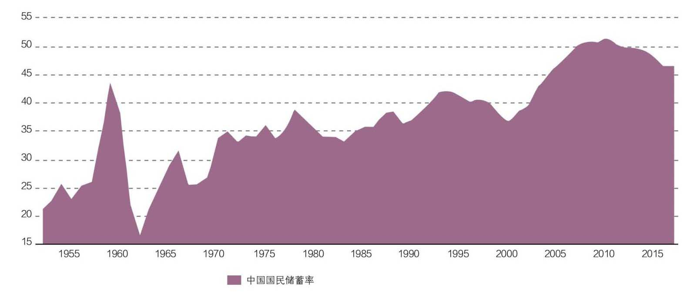
但中国可以不依赖于外国资本。资本可以直接取自本国的储蓄。在中国家庭变得富裕时，储蓄率还一直保持在较高水平，这是中国文化的产物。图26明确地显示出中国人还不满足，他们想要投资更多，他们不想坐吃山空。如果中国资本市场改革能够将这种欲求转化成有效的投资，通过对教育、技术的持续投资实现经济的转型升级，从而实现经济增长、个人财富增长、消费升级、投资增加的持续正向循环，就能实现中国经济的长期可持续增长。
4.理解中国经济未来的另一个维度是中国政府在处理重大问题、危机时的灵活性和实用性。今天中国政府的两个目标，即全面从严治党治国与保持经济中高速可持续增长之间既统一又有一定矛盾，有时处理得不好甚至可能演化成危机。但是在应对危机时，我们也看到中国政府表现出足够的弹性和实用主义精神，可以在两大目标中调整轻重缓急。比如中国政府在中美贸易冲突问题上已经调整了与美国谈判的策略，也改变了之前对私营企业家的一些处理方式和对私营企业的借贷政策，尤其是在证券市场暴跌中对私营企业金融股权的处理等等。当然，已经造成的损失难以逆转，伤口愈合也需要一定时间。
另外，全面从严治党治国的结果可能是政治愈发稳定而非相反，这一点可能会让同情西方模型的国内、国外观察家感到难以理解、难以接受。但是现实确实如此，过去和当代也都有很多案例可以佐证。在这种情况下，人们会想方设法进行适应性调整。无论人们对今天的局面有多少不满，大多数人并不愿意离开中国。他们既带不走财富，更带不走事业。随着政策改善，时间推移，一切又回归常态。商人会继续经营生意。这些财富不会从中国流走，生产性资产不会丢失。社会上的大多数人，甚至包括中国政府，都会学着去调整。如果中国政府都具有灵活性和适应性，我想整个中国社会必然也是灵活的、具有适应性的。当矛盾爆发时，我们会看到两个目标之间的优先顺序不断地切换。只要政府不改变经济改革发展目标，中国经济就会在一个稳定单一的大市场中持续发展下去。
5.那么在现有的政治经济模式下，中国经济还能走多远呢？当然没有人能够对此作出确切的回答。所以，要预测中国经济的未来，最好参考一下以类似政治、文化组织起来的国家的发展经验。
东亚同样受儒教影响的国家、地区，比如日本、韩国、新加坡、中国香港、中国台湾，尽管无论是政府管控程度还是人口数量上都与中国有很大不同，他们的发展历程仍对预测中国经济前景具有启发意义。
日本在1962年首次达到10,000美元人均GDP水平（2010年不变价美元）。随后的24年里，其GDP平均复合增长率约为6.1%，一直持续到30,000美元人均GDP水平（图27）。然后增长率开始放缓。韩国在1993年突破了10,000美元大关。随后24年，GDP平均复合增长率为4.7%，直至达到25,000美元以上（图28）。新加坡的复合增长率高达8.2%，并在较短的时间内从人均10,000美元一直增长到30,000美元（图29）。中国香港也是类似，有28年10%的增长率（图30）。当然，新加坡和香港都是很小的经济体，因此不太具有可比性。韩国和日本的数据更具预测性。他们在政治上的组织方式和中国类似，也和中国一样重视教育、技术、产业升级并且强调国内消费，日本尤其如此。韩国的经济仍然非常依赖外国。但他们都多多少少转移了一些重心到消费上。
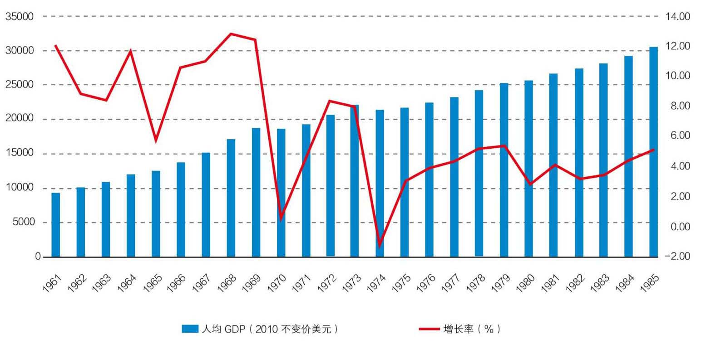
这些东亚儒教国家的经历可以帮助我们估测中国的增长潜力很有帮助。大家都相信贤能制（Meritocracy）的文化，都有很高的储蓄率，重视教育、科技，在到达10,000美元人均GDP时还表现出强烈的企图心，而且他们大多数在社会组织方式上也和中国有类似之处，在经济上政府都扮演着比西方国家更重要的角色。中国社会很有可能会走出类似的轨迹。
但我们是自下而上的投资者。我们的投资一般不受整体宏观环境的影响。今天我们之所以要讨论这些问题，是因为我们所投资的公司在某种程度上与它们所在国家的命运也是息息相关的。所以我们要对这个国家有一个粗略的认知。这种认知不一定要非常精确，也不需要时时正确。我们只需要对所投注的国家未来20年或30年的情况有个大致的推测。这就是为什么我们要做这些分析，为什么我们要思考这些问题。
我们已经讨论了许多不同的方面，来帮助你更加公允、客观地了解大局。所以下次你们看到美国的知名报刊谈论到中国时，别忘了他们的固有偏见。这些偏见来自于他们自己的经历和成功经验。他们倾向于由此去评判那些和自己不同的东西。当你看到中国对某个问题做出回应时，通常也是源于他们自己的经历、自己的成功经验和自己的偏见。你要有拨云见日的能力。
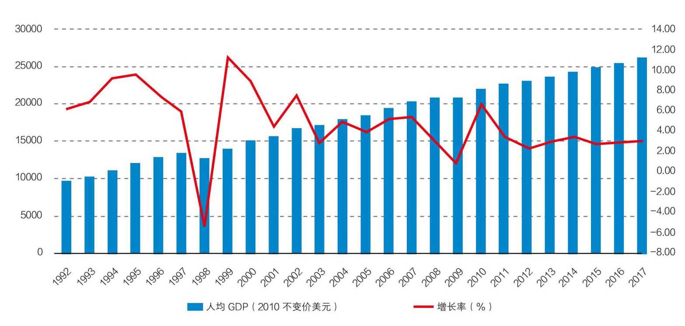
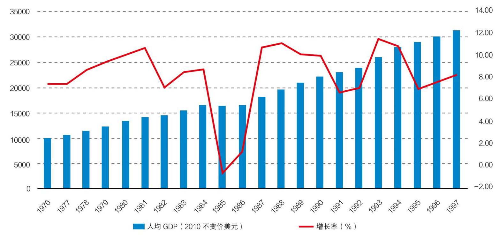
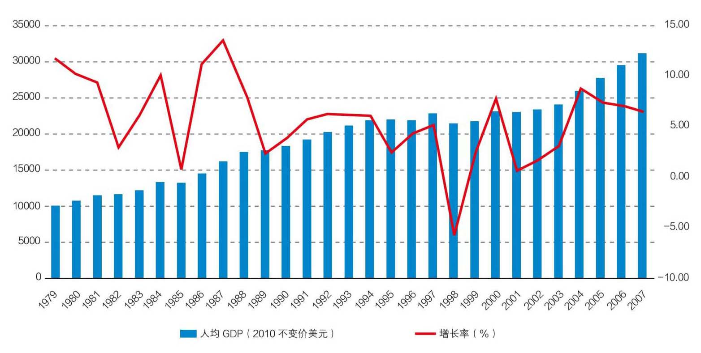
最后总结一下，地理位置的不同决定了中国和西方的发展走出了不同的道路，政府在两种文化中扮演了非常不同的角色。中国在历史上发明了政治上的贤能制，使得中国在农业文明时期的绝大部分时间领先于欧洲。同样，也是地理因素帮助欧洲最先发现了新大陆，并促使西方发明了经济上的贤能制，从而把人类带入了新的现代文明。
经过了100多年的挫折，中国终于在过去40年里发现了现代文明的精髓，也即现代科技和市场经济的结合，从而在40年中创造出超长期的、高速的经济增长奇迹，而这其中中国独特的文化和社会治理优势也不可或缺。在今天的环境下，执政党和政府对于社会的管控更加严格，但是社会治理的根本目标并未发生变化，就是要在未来几十年里继续为中国创造一个可持续的中高速经济增长。尽管和美国的贸易冲突加大了国际经济的不确定性，但是今天中国已经不再是一个完全依赖出口的国家，而正在迅速成长为世界上增长速度最快的进口大国。中国和美国出于对各自自身利益的考虑，极有可能会在贸易和经济的一系列问题上形成妥协。今天的中国已经通过了刘易斯拐点，进入到了经济发展成熟的黄金期，工资水平、消费水平、储蓄和投资水平，都进入了互相追赶式的螺旋增长，为创造中产阶级消费社会提供了良好的环境。中国的文化和国策使它有可能避免中等收入陷阱，而进入到高度发达国家的行列，这其中有各种因素的作用。这些因素包括在科研上持续的高投入，受过高等教育的劳动力人口数量，尤其是工程师群体的迅速扩大，日益推进的城市化进程，居民的高储蓄和高投资，稳定的政治环境和巨大的国内市场等等。我们也看到和中国具有同样儒教传统的其他一些东亚国家，都在达到中等收入水平之后又持续了很长时间的经济增长，最终成为了高收入国家。
最后，作为基本面投资人，我们为什么现在投资中国呢？因为在那里我们仍然能够发现一些优秀龙头企业，它们比西方的同类公司更便宜，而且增长速度更快。这就是我们在中国投资的逻辑。
谢谢大家！
2019年1月24日
[1] 来源：国家统计局，2018年国民经济和社会发展统计公报。
[2] STEM是科学（Science）、技术（Technology）、工程（Engineering）及数学（Math）四个学科的首字母缩略字。